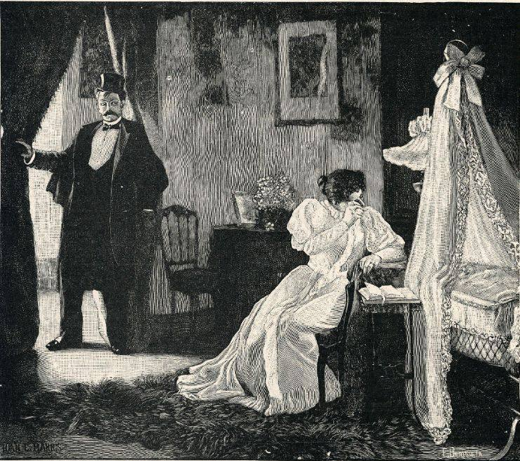

La seva història
- 1932
La II República aprova la primera llei de divorci. - 1939
El franquisme la deroga. Els divorcis ja fets s'anul·len. - 1981
La Ley 30/1981 torna a permetre'l, amb separació prèvia i causes. - 2005
La Ley 15/2005, el «divorci exprés»: no cal al·legar cap causa, n'hi ha prou que hagin passat tres mesos des del casament. - 2015
Es pot divorciar davant notari si hi ha acord i no hi ha fills menors.
Curiositat
La llei del 1981 es va aprovar amb una forta oposició: el ministre de Justícia que la va impulsar, Francisco Fernández Ordóñez, va ser molt criticat dins del seu propi partit.
Què ha canviat en la moral
El matrimoni ha passat d'entendre's com un vincle per a tota la vida a basar-se en la voluntat dels cònjuges: n'hi ha prou que un dels dos no vulgui continuar casat.
Vigent a 9 de novembre de 2026 · Código Civil, versió consolidada del BOE